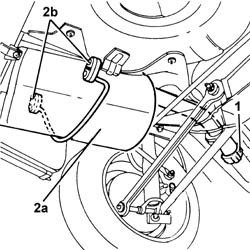
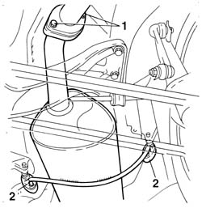
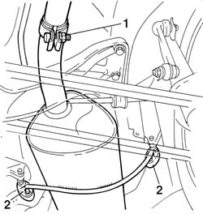
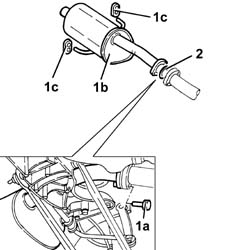

1076B22 rear exhaust silencer - r+r emission control versions
- Path
- Procedures > 10 ENGINE > 1076 EXHAUST PIPES AND SILENCERS > 1076B exhaust pipes and silencers > 1076B22 rear exhaust silencer - r+r emission control versions
- Kind
- repair procedure (removal / refitting; the operation number is the code)
- Applies to
- engines: 1.6 TS , 1.8 TS, 2.5 V6, 3.2 V6, 1.9 JTD 8v , 2.4 JTD 10v; all production periods
- Interactive page
- https://sloeber94.github.io/elrnDB-a156/en/#/3237569
Applies to: engines: 2.5 V6, 3.2 V6; all production periods
 Removing
Removing
 Refitting
RefittingPosition the vehicle on the ramp.
1. Loosen the collar fixing the rear exhaust silencer to the intermediate exhaust silencer.
2. Remove the rear exhaust silencer (2a) after having released it from the flexible mountings (2b) and from the intermediate exhaust silencer.

Applies to: engines: 2.5 V6, 3.2 V6; all production periods
Refitting
RemovingPlace the rear exhaust silencer back in its housing, secure it using the flexible mountings and connect it to the intermediate exhaust silencer.
Tighten the collar fixing the rear exhaust silencer to the intermediate exhaust silencer.
Remove the car from the ramp.
Applies to: engines: 1.6 TS , 1.8 TS; all production periods
Removing
RefittingPlace the car on the lifting bridge.
Lift the car.
Applies to: engines: 1.8 TS; all production periods
1. Unscrew fixing screws joining rear exhaust silencer to intermediate exhaust pipe and remove seal.
2. Release rear exhaust silencer from the two support flexible parts and remove it.

Applies to: engines: 1.6 TS ; all production periods
1. Slacken screw of fixing clamp joining rear exhaust silencer to intermediate exhaust pipe.
2. Release exhaust silencer from the two support flexible parts and remove it.

Applies to: engines: 1.6 TS , 1.8 TS; all production periods
Refitting
RemovingPosition rear exhaust silencer and connect it to the two support flexible parts.
Applies to: engines: 1.6 TS ; all production periods
Tighten clamp fixing rear exhaust silencer to intermediate exhaust pipe.
Applies to: engines: 1.8 TS; all production periods
Insert gasket between rear exhaust silencer flange and that of intermediate exhaust pipe.
Screw the two fixing screws.
 | Fastening | Component | Ø | Value (daNm) |
|---|---|---|---|---|
- | Bolt | REAR EXHAUST SILENCER | M8 | 2.28 - 2.76 |
Applies to: engines: 1.9 JTD 8v , 2.4 JTD 10v; all production periods
Removing
RefittingPosition the vehicle on the lift.
Raise the car.
1. Tighten bolts (1a) and remove rear exhaust silencer (1b) after releasing from flexible mounts (1c).
2. Remove the seal.

Applies to: engines: 1.9 JTD 8v , 2.4 JTD 10v; all production periods
Refitting
RemovingFit the rear exhaust silencer and support using the flexible mounts.
Tighten the rigid exhaust pipe end silencer bolts to the specified torque.
| Fastening | Component | Ø | Value (daNm) |
|---|---|---|---|---|
- | Bolt | REAR EXHAUST SILENCER | M8 | 2.0 - 2.5 |
Lower the vehicle.
Remove the vehicle from the ramp.